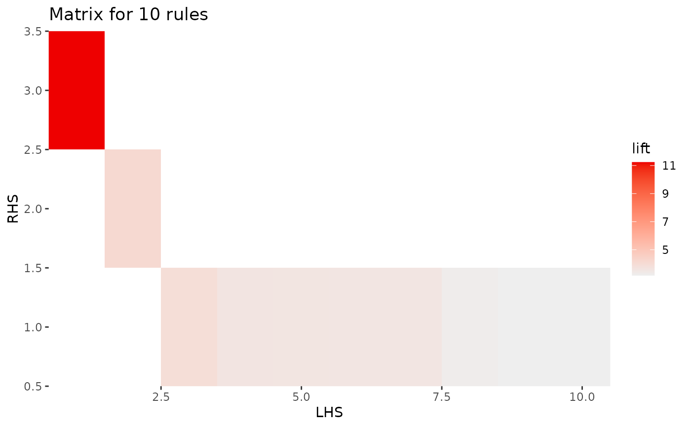
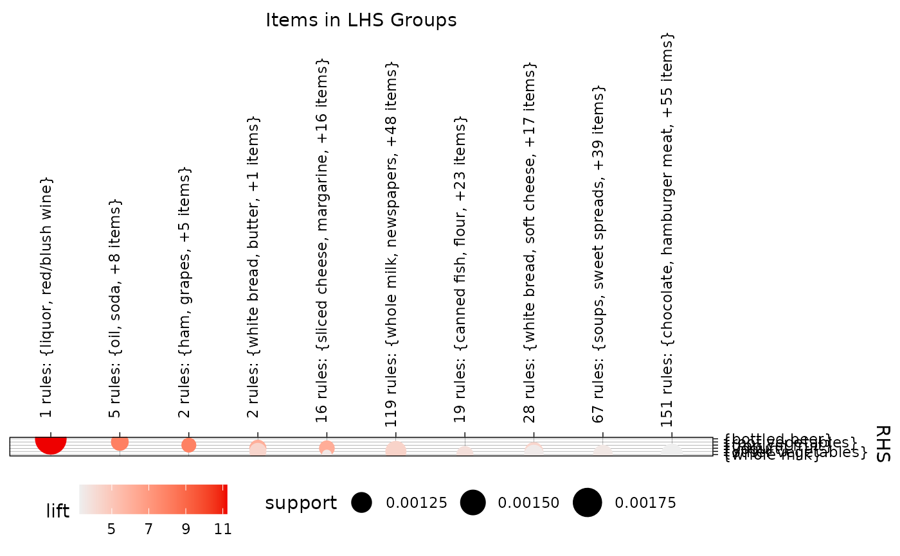

Convert association rules into a matrix
Source:R/rules2groupedmatrix.R, R/rules2matrix.R
rules2matrix.RdConverts a set of association rules into a matrix with unique LHS itemsets as columns and unique RHS itemsets as rows. The matrix cells contain a quality measure. The LHS itemsets can be grouped.
Usage
rules2groupedMatrix(
rules,
measure = "lift",
measure2 = "support",
k = 10,
aggr.fun = mean,
lhs_label_items = 2
)
rules2matrix(rules, measure = "support", reorder = "measure", ...)Arguments
- rules
a rules object.
- measure
quality measure put in the matrix
- measure2
second quality measure (organized in the same way as measure).
- k
number of LHS itemset groups.
- aggr.fun
function to aggregate the quality measure for groups.
- lhs_label_items
number of top items used to name LHS itemset groups (columns).
- reorder
reorder rows and columns? Possible methods are: "none", "measure" (default), "support/confidence", "similarity".
- ...
passed on to
arules::DATAFRAME().
Value
rules2matrix returns a matrix with quality values.
rules2groupedMatrix returns a list with elements
- m
the grouped matrix for measure.
- m2
the grouped matrix for measure2.
- clustering_rules
vector with group assignment for each rule.
References
Michael Hahsler and Radoslaw Karpienko. Visualizing association rules in hierarchical groups. Journal of Business Economics, 87(3):317–335, May 2016. doi:10.1007/s11573-016-0822-8 .
See also
plot() for rules using method = 'matrix' and
method = 'grouped matrix'.
Examples
data(Groceries)
rules <- apriori(Groceries, parameter = list(support = 0.001, confidence = 0.8))
#> Apriori
#>
#> Parameter specification:
#> confidence minval smax arem aval originalSupport maxtime support minlen
#> 0.8 0.1 1 none FALSE TRUE 5 0.001 1
#> maxlen target ext
#> 10 rules TRUE
#>
#> Algorithmic control:
#> filter tree heap memopt load sort verbose
#> 0.1 TRUE TRUE FALSE TRUE 2 TRUE
#>
#> Absolute minimum support count: 9
#>
#> set item appearances ...[0 item(s)] done [0.00s].
#> set transactions ...[169 item(s), 9835 transaction(s)] done [0.00s].
#> sorting and recoding items ... [157 item(s)] done [0.00s].
#> creating transaction tree ... done [0.00s].
#> checking subsets of size 1 2 3 4 5 6 done [0.01s].
#> writing ... [410 rule(s)] done [0.00s].
#> creating S4 object ... done [0.00s].
rules
#> set of 410 rules
## Matrix
m <- rules2matrix(rules[1:10], measure = "lift")
m
#> {liquor,red/blush wine} {turkey,curd} {rice,sugar}
#> {bottled beer} 11.23527 NA NA
#> {other vegetables} NA 4.134524 NA
#> {whole milk} NA NA 3.913649
#> {whipped/sour cream,house keeping products}
#> {bottled beer} NA
#> {other vegetables} NA
#> {whole milk} 3.612599
#> {soups,bottled beer} {curd,cereals} {pastry,sweet spreads}
#> {bottled beer} NA NA NA
#> {other vegetables} NA NA NA
#> {whole milk} 3.587512 3.557863 3.557863
#> {butter,jam} {napkins,house keeping products}
#> {bottled beer} NA NA
#> {other vegetables} NA NA
#> {whole milk} 3.261374 3.17984
#> {yogurt,cereals}
#> {bottled beer} NA
#> {other vegetables} NA
#> {whole milk} 3.168192
#> attr(,"encoding")
#> {liquor,red/blush wine} {turkey,curd} {rice,sugar}
#> {bottled beer} 1 NA NA
#> {other vegetables} NA 9 NA
#> {whole milk} NA NA 10
#> {whipped/sour cream,house keeping products}
#> {bottled beer} NA
#> {other vegetables} NA
#> {whole milk} 7
#> {soups,bottled beer} {curd,cereals} {pastry,sweet spreads}
#> {bottled beer} NA NA NA
#> {other vegetables} NA NA NA
#> {whole milk} 5 2 8
#> {butter,jam} {napkins,house keeping products}
#> {bottled beer} NA NA
#> {other vegetables} NA NA
#> {whole milk} 4 6
#> {yogurt,cereals}
#> {bottled beer} NA
#> {other vegetables} NA
#> {whole milk} 3
plot(rules[1:10], method = "matrix")
#> Itemsets in Antecedent (LHS)
#> [1] "{liquor,red/blush wine}"
#> [2] "{turkey,curd}"
#> [3] "{rice,sugar}"
#> [4] "{whipped/sour cream,house keeping products}"
#> [5] "{soups,bottled beer}"
#> [6] "{curd,cereals}"
#> [7] "{pastry,sweet spreads}"
#> [8] "{butter,jam}"
#> [9] "{napkins,house keeping products}"
#> [10] "{yogurt,cereals}"
#> Itemsets in Consequent (RHS)
#> [1] "{whole milk}" "{other vegetables}" "{bottled beer}"

## Grouped matrix
# create a matrix with LHSs grouped in k = 10 groups
gm <- rules2groupedMatrix(rules, k = 10)
gm$m
#> 1 rules: {liquor, red/blush wine}
#> {bottled beer} 11.23527
#> {root vegetables} NA
#> {tropical fruit} NA
#> {yogurt} NA
#> {other vegetables} NA
#> {whole milk} NA
#> 5 rules: {oil, soda, +8 items}
#> {bottled beer} NA
#> {root vegetables} 8.045706
#> {tropical fruit} NA
#> {yogurt} NA
#> {other vegetables} NA
#> {whole milk} NA
#> 2 rules: {ham, grapes, +5 items}
#> {bottled beer} NA
#> {root vegetables} NA
#> {tropical fruit} 8.002789
#> {yogurt} NA
#> {other vegetables} NA
#> {whole milk} NA
#> 2 rules: {white bread, butter, +1 items}
#> {bottled beer} NA
#> {root vegetables} NA
#> {tropical fruit} NA
#> {yogurt} 6.065542
#> {other vegetables} 4.373055
#> {whole milk} NA
#> 16 rules: {sliced cheese, margarine, +16 items}
#> {bottled beer} NA
#> {root vegetables} NA
#> {tropical fruit} NA
#> {yogurt} 6.121606
#> {other vegetables} NA
#> {whole milk} 3.557863
#> 119 rules: {whole milk, newspapers, +48 items}
#> {bottled beer} NA
#> {root vegetables} NA
#> {tropical fruit} NA
#> {yogurt} NA
#> {other vegetables} 4.467593
#> {whole milk} NA
#> 19 rules: {canned fish, flour, +23 items}
#> {bottled beer} NA
#> {root vegetables} NA
#> {tropical fruit} NA
#> {yogurt} NA
#> {other vegetables} NA
#> {whole milk} 3.913649
#> 28 rules: {white bread, soft cheese, +17 items}
#> {bottled beer} NA
#> {root vegetables} NA
#> {tropical fruit} NA
#> {yogurt} NA
#> {other vegetables} 4.385919
#> {whole milk} 3.420623
#> 67 rules: {soups, sweet spreads, +39 items}
#> {bottled beer} NA
#> {root vegetables} NA
#> {tropical fruit} NA
#> {yogurt} NA
#> {other vegetables} NA
#> {whole milk} 3.570416
#> 151 rules: {chocolate, hamburger meat, +55 items}
#> {bottled beer} NA
#> {root vegetables} NA
#> {tropical fruit} NA
#> {yogurt} NA
#> {other vegetables} NA
#> {whole milk} 3.257931
# number of rules per group
table(gm$clustering_rules)
#>
#> 1 2 3 4 5 6 7 8 9 10
#> 1 5 2 2 16 119 19 28 67 151
# get rules for group 1
inspect(rules[gm$clustering_rules == 1])
#> lhs rhs support confidence
#> [1] {liquor, red/blush wine} => {bottled beer} 0.001931876 0.9047619
#> coverage lift count
#> [1] 0.002135231 11.23527 19
# create the corresponding grouped matrix plot by passing the grouped matrix as the groups parameter
plot(rules, method = "grouped matrix", groups = gm)
